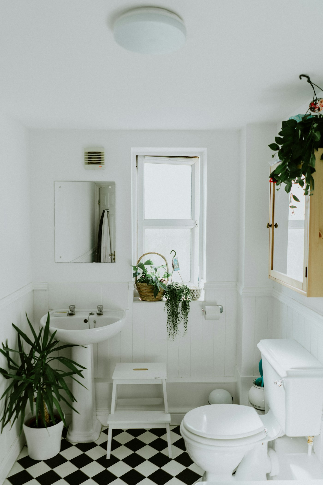

Small Bathroom Makeover

A small bathroom can still feel organised, calm and well finished. This section covers budget-friendly ways to improve storage, layout and decoration in compact spaces, including rentals where permanent changes may not be possible. Small upgrades — better organisation, a new mirror arrangement, or coordinated accessories — can make daily routines easier. Start by clearing surfaces and measuring the space you actually have.

The first Small Bathroom Makeover guide is in the works
What’s coming: beginner-friendly guides on Small Bathroom Makeover Ideas, Budget Bathroom Decorations, DIY Bathroom Storage — practical, budget-conscious and explained step by step, in the same style as our first published guide.
Start With Our Bedroom Makeover Guide
The first Small Bathroom Makeover guide is in the works
What’s coming: beginner-friendly guides on Small Bathroom Makeover Ideas, Budget Bathroom Decorations, DIY Bathroom Storage — practical, budget-conscious and explained step by step, in the same style as our first published guide.
Topics in Small Bathroom Makeover
These are the topics this category covers. Detailed articles are being prepared; each topic below is a starting point for your own project planning.
-
Small Bathroom Makeover Ideas
A topic in our Small Bathroom Makeover category. Articles are on the way — for now, use it as a starting point to plan your own project.
-
Budget Bathroom Decorations
A topic in our Small Bathroom Makeover category. Articles are on the way — for now, use it as a starting point to plan your own project.
-
DIY Bathroom Storage
A topic in our Small Bathroom Makeover category. Articles are on the way — for now, use it as a starting point to plan your own project.
-
Small Bathroom Organization
A topic in our Small Bathroom Makeover category. Articles are on the way — for now, use it as a starting point to plan your own project.
-
Affordable Bathroom Accessories
A topic in our Small Bathroom Makeover category. Articles are on the way — for now, use it as a starting point to plan your own project.
-
Bathroom Wall Decor
A topic in our Small Bathroom Makeover category. Articles are on the way — for now, use it as a starting point to plan your own project.
-
Space-Saving Bathroom Ideas
A topic in our Small Bathroom Makeover category. Articles are on the way — for now, use it as a starting point to plan your own project.
What You’ll Find Here & Getting Started
Practical advice for beginners starting a small bathroom makeover project:
- Measure doors, shelves and wall space carefully — small rooms leave little margin for error.
- Use vertical space with shelves or over-door storage where suitable.
- Keep everyday items in closed or grouped storage to reduce visual clutter.
- Choose moisture-resistant materials and finishes made for bathrooms.
Related Categories
Category
Bedroom Makeover
Cozy, restful bedrooms on a realistic budget — layout, colour, storage and finishing touches.
Explore Bedroom Makeover
Category
DIY Wall Decor
Handmade art, gallery walls and shelves that turn blank walls into focal points.
Explore DIY Wall Decor
Category
Dollar Store DIY Decor
Affordable finds transformed into vases, centrepieces and seasonal decor.
Explore Dollar Store DIY Decor